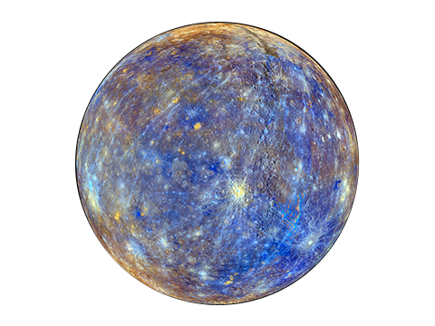
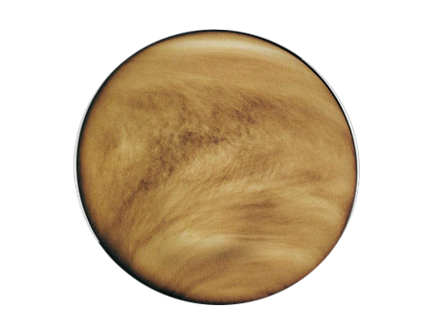
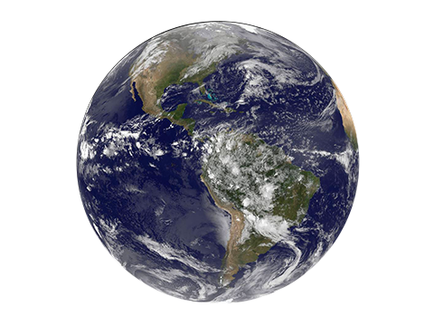
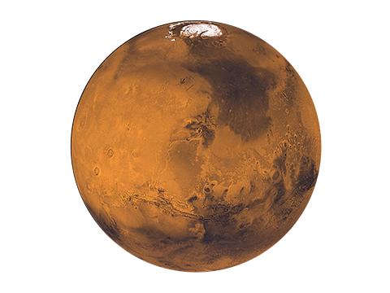
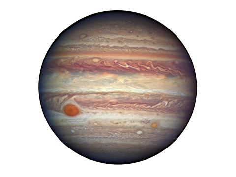
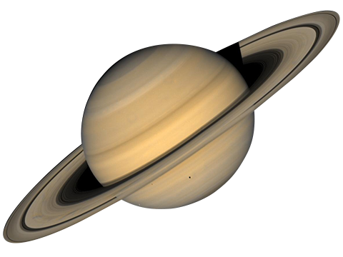
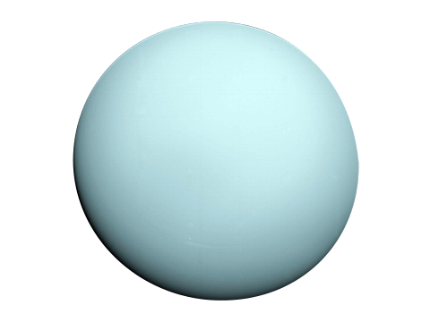
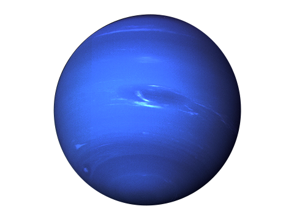

Планеты Солнечной системы
В Солнечной системе восемь планет, каждая из которых уникальна по своему строению, атмосфере и истории. Планеты делятся на земные (Меркурий, Венера, Земля, Марс) и газовые гиганты (Юпитер, Сатурн, Уран, Нептун). Они отличаются размерами, составом, наличием колец и спутников, а также условиями на поверхности. Изучение планет помогает понять происхождение и эволюцию не только нашей системы, но и экзопланет во Вселенной.
Список планет

Меркурий
Ближайшая к Солнцу планета. Очень горячая днём и очень холодная ночью. Атмосфера практически отсутствует.

Венера
Вторая планета от Солнца. Самая горячая в Солнечной системе из-за плотной атмосферы и парникового эффекта.

Земля
Наш дом. Единственная известная планета с жизнью и жидкой водой на поверхности.

Марс
"Красная планета". Известна своими пылевыми бурями и возможностью существования воды в прошлом.

Юпитер
Самая большая планета. Имеет мощную атмосферу и знаменитое Большое Красное Пятно.

Сатурн
Известен своими красивыми кольцами, состоящими из льда и камней.

Уран
Планета-гигант с голубоватым оттенком. Ось вращения сильно наклонена.

Нептун
Самая дальняя планета. Известен сильнейшими ветрами в Солнечной системе.
Земные планеты — Меркурий, Венера, Земля и Марс. Это плотные тела с твёрдой поверхностью, небольшими размерами и тонкой атмосферой (или её отсутствием).
Газовые гиганты — Юпитер и Сатурн. Огромные планеты, состоящие в основном из водорода и гелия, с мощными атмосферными вихрями и кольцами.
Ледяные гиганты — Уран и Нептун. Их атмосферы богаты метаном, что придаёт голубой цвет, а внутреннее строение отличается от газовых гигантов.
Планеты-гиганты имеют десятки спутников и сложные системы колец, а земные планеты — максимум один спутник (Земля) или вовсе без них.
Газовые гиганты — Юпитер и Сатурн. Огромные планеты, состоящие в основном из водорода и гелия, с мощными атмосферными вихрями и кольцами.
Ледяные гиганты — Уран и Нептун. Их атмосферы богаты метаном, что придаёт голубой цвет, а внутреннее строение отличается от газовых гигантов.
Планеты-гиганты имеют десятки спутников и сложные системы колец, а земные планеты — максимум один спутник (Земля) или вовсе без них.
Строение и атмосфера планет
- Меркурий — самая маленькая и быстрая планета, почти не имеет атмосферы, поверхность покрыта кратерами.
- Венера — плотная атмосфера из углекислого газа, сильный парниковый эффект, температура выше, чем на Меркурии.
- Земля — единственная планета с кислородной атмосферой и жидкой водой, поддерживает жизнь.
- Марс — разреженная атмосфера, много железа в почве (красный цвет), есть полярные шапки и следы древних рек.
- Юпитер — самая большая планета, мощные штормы (Большое Красное Пятно), атмосфера из водорода и гелия.
- Сатурн — знаменит своими кольцами, атмосфера похожа на юпитерианскую, но менее плотная.
- Уран — вращается почти "на боку", атмосфера богата метаном, что придаёт голубой цвет.
- Нептун — самые сильные ветры в Солнечной системе, глубокий синий цвет из-за метана.
Интересные факты о планетах
- У Юпитера 95 известных спутников, больше, чем у любой другой планеты.
- Сутки на Венере длиннее её года: она вращается вокруг своей оси медленнее, чем вокруг Солнца.
- На Марсе самая высокая гора в Солнечной системе — Олимп (22 км).
- Уран вращается "лежа на боку" — его ось наклонена почти на 98°.
- У Сатурна самые яркие и протяжённые кольца, но кольца есть у всех гигантов.
- Меркурий и Венера не имеют спутников, а у Земли только Луна.
- Нептун был открыт не визуально, а математически — по возмущениям в орбите Урана.